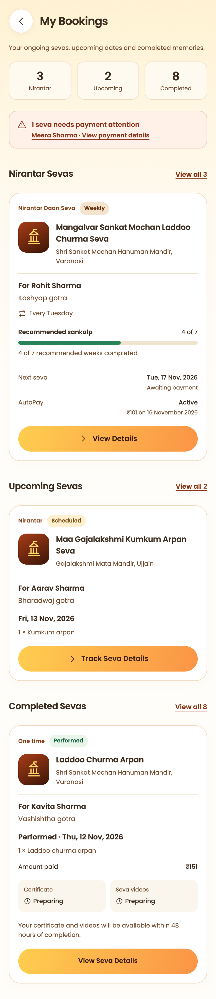

EXP-0001 · Active exploration
My Bookings: tabs or sections?
Two existing design directions for finding ongoing bookings, upcoming dates and performed sevas.
No option has been selected. These are proposals for comparison. Selection would lead to an integrated design review before the next engineering handoff.

The thumbnails are frozen imported reference images. Interactive links open the current working source.
What to compare
Using identical sample data, find the next registered date, identify the ongoing booking's beneficiary, find a performed date's media and explain a payment problem. Record task results and confusion before selecting a direction.